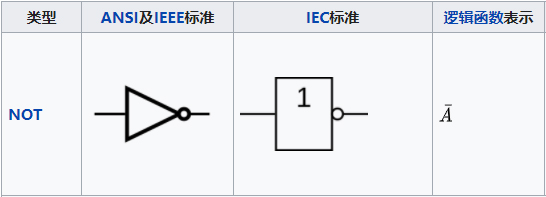
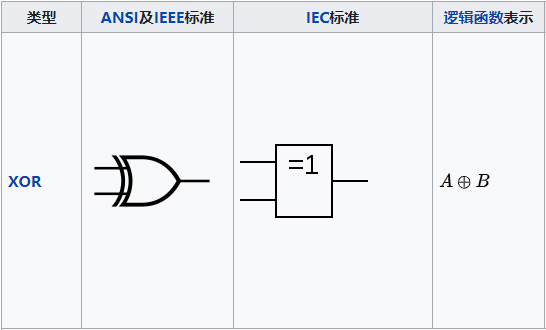
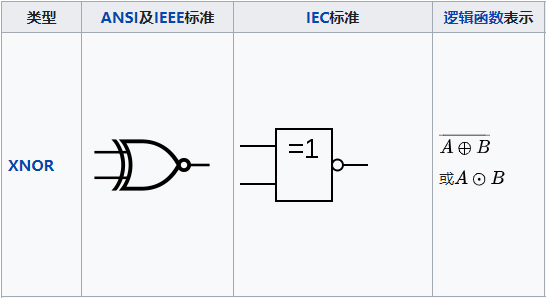
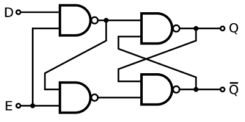
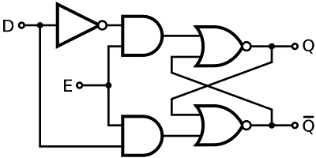
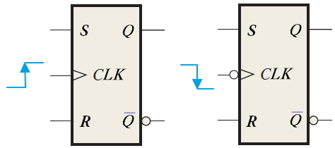
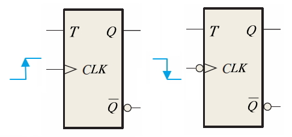
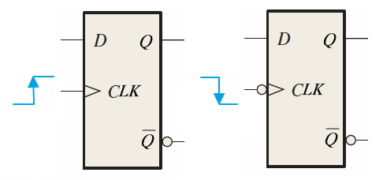

好久没写硬件的笔记了，写这篇笔记是因为在网上或者在现有的书上查阅相关知识点的时候，发现大多数东西都是一略带过、不全面，而且内容讲的有点沉闷，容易让人呼呼入睡（ps：这里绝对没有瞧不起作者的意思哈，可能风格有点不适应），所以想着以后可能也会用到，还是自己总结一篇吧。
本篇主要分析半导体存储电路（其中包括时序图跟真值表），但由于涉及到逻辑门电路，所以就一并放在一起总结了。嘛，原本的标题是想写 “半导体存储电路分析” 的。。。
# 逻辑门电路
# 与、或、非
与门

特点：所有输入为高电平时（逻辑 1），才会有高电平（逻辑 1）输出；其中一个输入为低电平（逻辑 0）则出低电平（逻辑 0）。
真值表：
输入 输入 输出 A B A and B 0 0 0 0 1 0 1 0 0 1 1 1 总结：遇 0 为 0。
或门

特点：其中一个输入为高电平时（逻辑 1），输出为高电平（逻辑 1）；只有当所有输入为低电平（逻辑 0）才出低电平（逻辑 0）。
真值表：
输入 输入 输出 A B A or B 0 0 0 0 1 1 1 0 1 1 1 1 总结：遇 1 为 1。
非门

特点：输出的电平与输入的电平（逻辑）相反。
真值表：
输入 输出 A not A 0 1 1 0 总结：状态取反。


# 异或和同或
异或

特点：输入的电平相同时，输出为低电平（逻辑 0）；若输入的电平不同，则输出高电平（逻辑 1）。
真值表：
输入 输入 输出 A B A xor B 0 0 0 0 1 1 1 0 1 1 1 0 总结：相同为 0，不同为 1。
同或

特点：只有当输入的电平相同时，输出才为高电平（逻辑 1）；而输入的电平不同时，输出低电平（逻辑 0）。
真值表：
输入 输入 输出 A B A xnor B 0 0 1 0 1 0 1 0 0 1 1 1 总结：不同为 0，相同为 1。
# 与非和或非
与非和或非，其实相当于与门和或门输出取反：

真值表这里就不放了，其实就是把与门和或门的输出状态取反。。。
# 逻辑门电路实现
逻辑门电路的实现，可由三极管或者 CMOS 管构建而成，可以看以前的文章：三极管 --- 初识 (图文并茂)
# 存储电路
基本概念：
- 存储单元：存储一位数据的电路。可分为静态存储单元和动态存储单元两大类。静态存储单元由门电路连接而成，其中包括各种电路结构形式的锁存器和触发器，只要保持通电，静态存储单元的状态会一直保持下去。动态存储单元则是利用电容的电荷存储效应来存储数据的，由于电容存储的电荷会随着时间的推移逐渐泄露，必须定期地进行 “刷新”，才能保证数据不会丢失。
- 寄存器：存储一组数据的电路。由 N 个触发器构成的寄存器可以存储一组 N 位的二值数据。
- 存储器：存储大量数据的电路。存储器种类虽然很多，但它们的基本结构形式都是由存储矩阵和读 / 写控制电路两部分组成的。从存储功能上讲，可分为随机存储器（Random Access Memory，简称 RAM）和只读存储器（Read Only Memory ，简称 ROM）两大类。随机存储器又分成静态随机存储器（SRAM）和动态随机存储器（DRAM）两类；而只读存储器又有掩模 ROM、可编程 ROM（PRAM）和可擦除可编程 ROM（EPRAM）几种不同类型。
# 锁存器和触发器
下面主要分析硬件电路中经常接触的静态存储单元，那么就先来了解一下锁存器和触发器之间的关系：
触发器的线路图由逻辑门组合而成，其结构均由 SR 锁存器派生而来（广义的触发器包括锁存器）；
触发器除了自身的输入信号外，还带有 CLK 时钟信号线，通过时钟信号的变化，使得触发器的次态仅仅取决于 CLK 信号下降沿（或上升沿）到达时刻输入信号的状态，以此来增强靠干扰能力，因此，触发器也叫边沿触发器；
而锁存器并没有 CLK 时钟信号线作为辅助，只有自身的输入信号，但是，通过改进（增加一条使能信号线）可以产生新的门控锁存器，此时锁存器上多了一条使能信号线，如果在使能信号线上给予一定频率的脉冲信号，那么门控锁存器就相当于触发器了。
知识补充：https://circuitglobe.com/difference-between-latch-and-flip-flop.html
# 锁存器
锁存器的类型有很多种：S-R、J-K、T and D latches。这里只介绍比较常用的 S-R latch and Gated D latch。
# SR 锁存器

SR 锁存器（Set-Reset Latch）是静态存储单元当中最基本、也是电路结构最简单的一种。通常它由两个或非门或者与非门组成。
Ⅰ、电路组成：
由或非门构成

由与非门构成


Ⅱ、状态分析：
从上面的两种构成进行比较，根据它们对应的状态表可以看出，当 S、R 信号为高电平（逻辑 1）【对应的，、 信号（由于符号表示的是非的关系）就为低电平（逻辑 0）】，就相当于这两个状态表高亮部分，所以无论是由哪个逻辑门构成，其输出状态都是一样的；因此，找其中一个表对照着理解就好了，那么就来稍微分析一下吧：
Ⅲ、时序分析：
以与非门构成电路为例：

在上图可以看到， t3 ~ t4 时刻，输入端出现了 = = 0 的状态，但由于 首先回到了高电平，所以 SR 锁存器的次态仍是可以确定的；可能你会觉得，上面不是说了无法确定状态吗？这是由于 = = 0 时会出现非定义的 Q = = 1 的非法状态（要知道我们只定义了 0 和 1 的状态），而且当 和 同时回到高电平以后锁存器的状态难以确定，因此一般情况下还是避免这种 = = 0 的状态；同时，由于这个缺陷，JK 触发器产生了，下面会讲。
Ⅳ、电路改进：
从上面可以得知，由与非门构成的 SR 触发器，输入的电平（逻辑）是反向的输入（即为 、 ），因此，人们在电路的前端输入部分添加了转换功能，并且引入了使能控制信号，如下图：

于是乎，把上面的电路称之为：门控 SR 锁存器
门控使能信号（一般表示为 E 或者 C）的作用：
| E/C | Action |
|---|---|
| 0 | No action (keep state) |
| 1 | The same as non-clocked SR latch |
# 门控 D 锁存器
在上面已经见识到了 门控 SR 锁存器，那么稍微修改一下就会得到 门控 D 锁存器，由于是从 SR 锁存器上进行的修改，所以也存在着由或非门或者与非门所组成电路。
Ⅰ、电路组成：
基于 SR NAND 锁存器的门控 D 锁存器

基于 SR NOR 锁存器的门控 D 锁存器

对应上面两个门控 D 锁存器，其真值表都是一样的：
| E | D | Q | \overline | Comment |
|---|---|---|---|---|
| 0 | X | Qprev | prev | No change |
| 1 | 0 | 0 | 1 | Reset |
| 1 | 1 | 1 | 0 | Set |
从真值表上看，可以知道，在使能信号输入为高电平（逻辑 1）时，D 锁存器才起作用，否则，输出信号将保持原状态；并且，当 D 锁存器起作用时，输出的信号 Q 状态跟 D 输入状态一致，因此，D 锁存器也叫 D 跟随。
Ⅱ、时序分析

锁存器部分相关链接：https://learn.circuitverse.org/docs/Latches
# 触发器
触发器的类型同样也有很多种：S-R、J-K、T and D Flip flops。这里也只是分析常见的 J-K、T and D Flip flops。
根据时钟信号触发的不同，可以分为两种情况（上升沿触发和下降沿触发）：

从上图可以看到，上升沿触发和下降沿触发根本区别在于时钟信号输入端是否多了个非门。
# JK 触发器
根据边沿触发的不同，有以下两种逻辑符号：

以上升沿为例，其电路组成如下：

对应的真值表：
| 触发 | J | K | Q | Qnext | Comment |
|---|---|---|---|---|---|
| X | X | Qprev | Q | No change | |
| 0 | 0 | 0 | 0 | Hold state | |
| 0 | 0 | 1 | 1 | Hold state | |
| 0 | 1 | 0 | 0 | Reset | |
| 0 | 1 | 1 | 0 | Reset | |
| 1 | 0 | 0 | 1 | Set | |
| 1 | 0 | 1 | 1 | Set | |
| 1 | 1 | 0 | 1 | Toggle | |
| 1 | 1 | 1 | 0 | Toggle |
时序分析：

特征方程式：

# T 触发器
根据边沿触发的不同，有以下两种逻辑符号：

以上升沿为例，其电路组成如下：

对应的真值表：
| 触发 | T | Q | Qnext | Comment |
|---|---|---|---|---|
| X | Qprev | Q | No change | |
| 0 | 0 | 0 | Hold state | |
| 0 | 1 | 1 | Hold state | |
| 1 | 0 | 1 | Toggle | |
| 1 | 1 | 0 | Toggle |
时序分析：

特征方程式：

# D 触发器
根据边沿触发的不同，有以下两种逻辑符号：

以上升沿为例，其电路组成如下：

对应的真值表：
| 触发 | D | Q | Qnext | Comment |
|---|---|---|---|---|
| X | Qprev | Q | No change | |
| 0 | 0 | 0 | Reset | |
| 0 | 1 | 0 | Reset | |
| 1 | 0 | 1 | Set | |
| 1 | 1 | 1 | Set |
时序分析：

特征方程式：

触发器部分相关链接：https://learn.circuitverse.org/docs/flipflop
# 相关资料
https://en.wikipedia.org/wiki/Flip-flop_(electronics)
https://www.youtube.com/watch?v=-aQH0ybMd3U&list=RDCMUCSX3MR0gnKDxyXAyljWzm0Q&start_radio=1
http://yhhuang1966.blogspot.com/2019/06/latch-flip-flop.html
https://www.electronics-tutorials.ws/sequential/seq_1.html